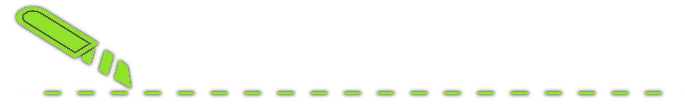
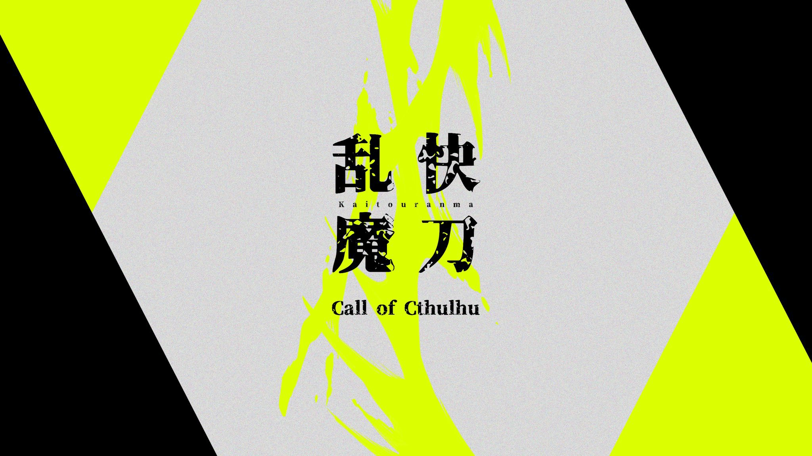
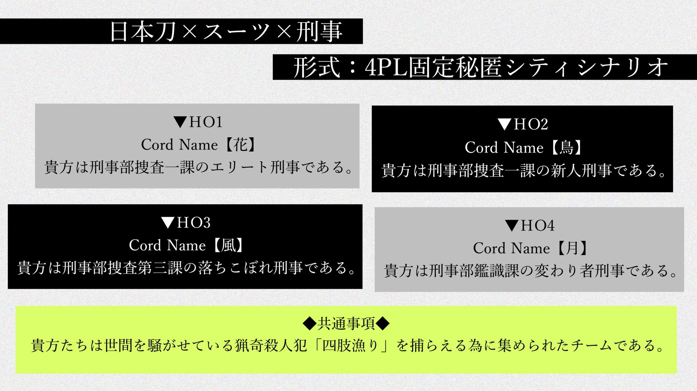

快刀亂魔團錄（團1）
2021/12/21-2023/01/01（後日談至今還沒帶完）
成員
KP：雨見谷 亮良
Ho1：蓋龍／花小路 吏道
Ho2：抹茶／燈鳥 夜久
Ho3：Bea／風魔 秋良
Ho4：怪物熊／月村 遼
我根本不會寫網頁（掃落）也不會帶團（掃落）
Rom也根本不會寫劇本（掃落）

快刀亂魔
著/《shop》ROM


✦Attention
- 本模組包含非道德、非倫理、非人道現象。
- 經常存在怪誕表現。
- 含有對神話生物的個人解釋。
- 存在 PVP 可能性。
- 會有很多NPC。（就算被裁員了還是一樣多）
- 不推薦苦手要素多的人使用本模組。請務必注意。
▲關於以上注意事項，請 KP 務必向 PL 傳達清楚。
✦關於本模組
- 對應6版（原作是6版，但我們用7版跑！）
- 模組PVP可能性很高。推薦和關係好的人一起玩。（KP按：參考團一的經驗，只要做個正常人，PVP的機率其實不高）
- 關於改動，KP 可以自行修改以求更順利地遊戲。但請告知 PL 關於修改的行為，希望大家都能知道。
- 關於會劇透的文章，即使是改變了的部分在處理時也請注意。
- 形式／City（是一本道模組，自由度沒有看起來的高，會改但能力有限）
- 遊戲人數／4 人固定（有秘密 HO）
- 遊戲時間／14～16 小時左右（KP按：團一光是公共頻道就120小時左右，不敢細數了）
- 推薦技能／三大探索技能、日本刀、閃避
- 准推薦技能／精神分析、醫學、以及其他HO裏建議的技能
【來自KP的預警】
- 本模組包含大量家庭倫理劇和八點檔
- 原作的HO平衡性做得相當差（排序：車頂3>>2>1>>>>>4車底），不排除改完結果跑出來平衡性沒有變好
- 原作就是💩的東西就算再用力改也不會改變它本來就是💩的事實
- 非常大量的魔改，包括HO和NPC，結團之後再一次過整理改了甚麼
- 建議和HO裏的NPC盡量打好關係，如果關係太差可能會影響遊戲體驗
（其他預警待增）
「你們是在這個法治國家中，唯一被許可佩戴刀具的正義守護者。」
團錄連結
※部分記錄的閒聊有模組《有誰死了》的劇透，已後期補上dc風打碼並註明劇透，但還是請小心不要點到海苔。
事前討論
Ho1：蓋龍／花小路
Ho2：抹茶／燈鳥
Ho3：Bea／風魔
Ho4：怪物熊／月村
分組：Ho12
分組：Ho34
Day1
共同行動
Ho1
Ho2
Ho3
Ho4
分組：Ho12
分組：Ho34
Day2
共同行動
Ho1
Ho2
Ho3
Ho4
分組：Ho124
分組：Ho13
分組：Ho14
分組：Ho23
分組：Ho34
Day3
共同行動
Ho1
Ho2
Ho3
Ho4
分組：Ho12
分組：Ho124
Day4
共同行動
Ho1
Ho2
Ho3
Ho4
分組：Ho12
分組：Ho34
Day5
共同行動
Ho1
Ho2
Ho3
Ho4
分組：Ho12
分組：Ho124
分組：Ho134
分組：Ho14
分組：Ho34
Day5深夜
共同行動
Ho1
Ho2
Ho3
Ho4
分組：Ho12
分組：Ho34
附錄
- PC介紹
- 資料01（房規、劇本概要、特殊規則、公開NPC等）
- 資料02（★大量劇透：NPC設定、KP對模組忍無可忍的吐槽、魔改的具體內容、參考資料等）